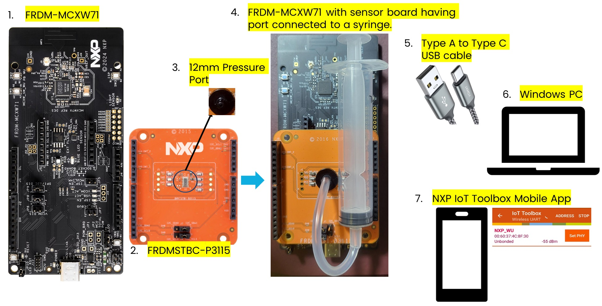

Smart Sensing Inhaler Demo using MPL3115 and FXLS8974CF
- This demo use FRDM-MCXW71 and on-board FXLS8974CF accelerometer as Tilt sensor with MPL3115 absolute pressure sensor using expansion board FRDMSTBC-P3115 to demonstrate connected smart sensing inhaler application.
- The demo showcases detection of tidal breathin pattern of patient to align dosage dispensation using high precision, digital pressure sensor MPL3115.
- The demo also showcases detection of correct inhaler posture to deliver right amount dosage using 3-axis accelerometer FXLS8974CF as Tilt sensor.
- Connected smart inhaler inform on dosages inhaled over BLE wireless UARTallowing remote patient monitoring, helps with patient’s adherence to dosages and compliance.
NOTE: For this demonstration, a syringe with tubing is connected to MPL3115 pressure sensor on FRDMSTBC-P3115 board to simulate pressure change due to patient's inhalation. The pressure threshold is set appropriately and is configurable based on actual inhalation pressure dip pattern.
The image below show the Demo Hardware Setup:

Refer to Demo README for more details.